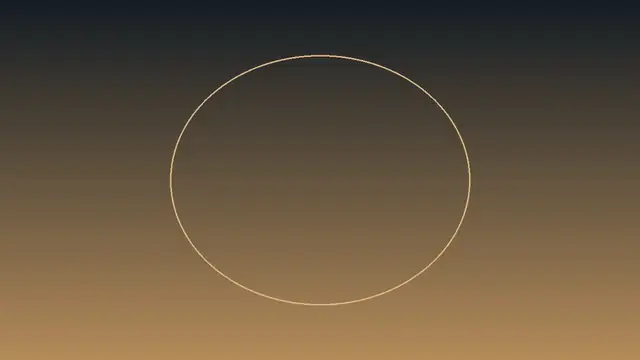
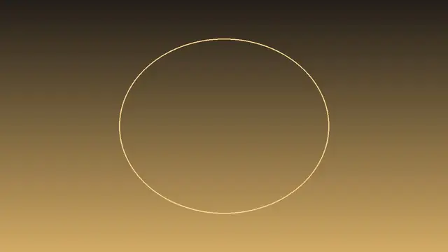
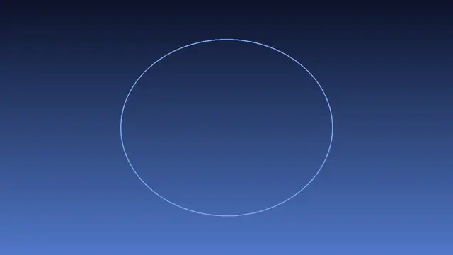
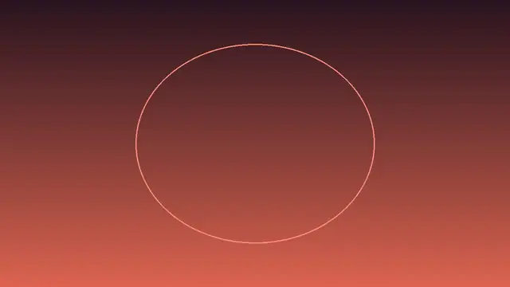
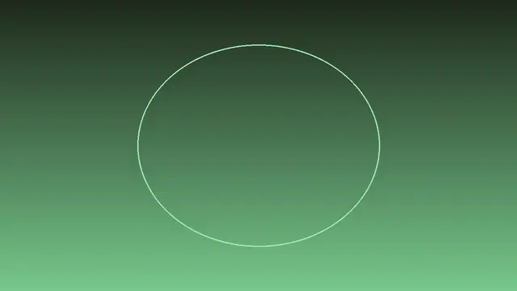
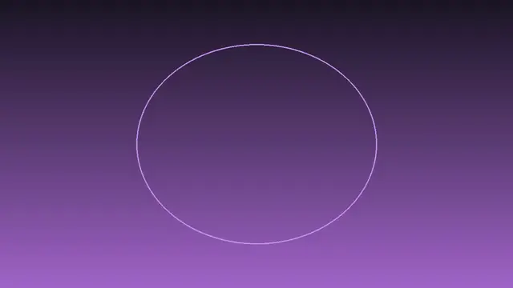
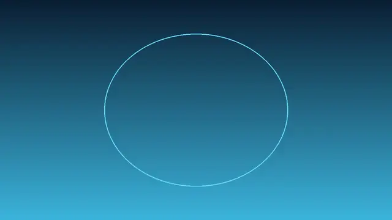
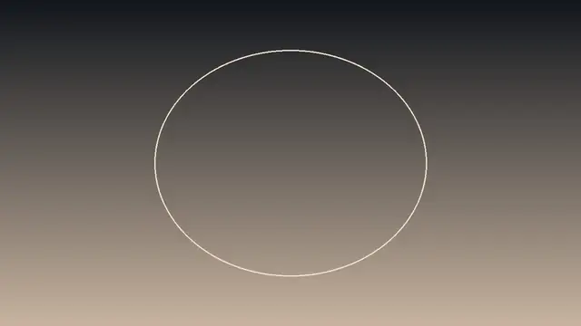

Mouthful of Dust
维多利亚州立图书馆把 Ned Kelly 遗物做成可近探的 3D 数字孪生：盔甲、死亡面具、步枪、靴子与 Jerilderie Letter；电影感光影 + 作家旁白。

打开网站 ↗它是什么：维多利亚州立图书馆做的 Ned Kelly 3D 数字孪生展：盔甲、死亡面具、步枪、靴子和 Jerilderie Letter，都能靠近看、听旁白。
好在哪：文化向的第一眼震撼——真遗物做成可探的电影感展柜，比单纯粒子秀更耐看；也是今天最适合当「今日最炫」的叙事向 WebGL。
怎么做到的：
- 主渲染走 Three.js r164 的 WebGLRenderer（不是 WebGPU）；Vite 打包的单页体验壳。
- GLTFLoader + DRACOLoader 加载遗物 GLB（至少信件在 CloudFront）；OrbitControls + 电影/手动机位。
- EffectComposer：RenderPass → FXAA → 亮度/饱和 → 输出色彩；ACESFilmic + exposure 0.25；RGBE/PMREM 环境光。
完整技术拆解
今日拆解 · Mouthful of Dust
- Live: https://mouthfulofdust.slv.vic.gov.au/
- Author / 出品: State Library Victoria（维多利亚州立图书馆）· A Ned Kelly Web Experience
- Source: Awwwards · https://www.awwwards.com/sites/mouthful-of-dust
- Bundle: Vite 产物
/mouthful-of-dust/assets/index-T5ghGgmv.js+index-CKL5gld5.css（HTML：type="module"） - 证据：对本页 HTML + 主 bundle（含
const Oh="164"、data-engine写成 `three.js r${Oh}、WebGLRenderer、GLTFLoader、DRACOLoader、OrbitControls、EffectComposer、FXAAShader、RGBELoader、PMREM、ACESFilmic、对象名armour/mask/rifle/boot/letter、CloudFrontletter.viewer.glb；无WebGPURenderer` / React / R3F）的抓取核对
为何选它
8 条里它最「重」也最动人：不是炫技粒子秀，而是把 Ned Kelly 的真实遗物——盔甲、死亡面具、步枪、靴子，以及著名的 Jerilderie Letter——做成可近探、可切换电影机位的 3D 数字孪生。电影感光影、作家旁白与无障碍朗读把图书馆藏品变成能「走进去」的叙事体验；技术上诚实走成熟的 Three.js WebGL 管线，恰适合做今日最炫的文化向反例——震撼不必 WebGPU。
实际在源码里找到的技术栈
const Oh="164"；data-engine 写成 `three.js r${Oh}；window.__THREE__=Oh`WebGLRenderer 30 次；data-engine 旁监听 webglcontextlost；0 次 WebGPURenderertype="module" 的 /mouthful-of-dust/assets/index-*.js + 配套 CSS——典型 Vite 打包GLTFLoader 28；DRACOLoader / setDRACOLoader / KHR_DRACO_MESH_COMPRESSION 同在——网格走 Draco 压缩 GLB…/3d-models/…/letter.viewer.glb；另有音频 / 字体 CDNact-three__ui-camera-mode、cinema / manual 切换；旁白与字幕容器齐全EffectComposer；composer.addPass(renderPass) → fxaaPass（FXAAShader）→ 亮度/饱和自定义 Pass → 输出色彩/tone PassinitPostProcessing：this.renderer.toneMapping=Rl（枚举映射为 ACESFilmic）；toneMappingExposure=.25PMREM 8；RGBELoader 5——环境光 / HDR 相关路径在包内MeshStandardMaterial / MeshPhysicalMaterial；AnimationMixer / SkinnedMesh / Skeleton——支持动画与较物理的表面WebGPURenderer；主路径明确是 WebGLreact-dom / createRoot / @react-three/fiber / useFrame（React 字面量仅 3 次，不足证明 React 应用壳）核心效果怎么工作（源码 + 标明推测）
1. Three.js r164 + WebGLRenderer（确认）
版本常量 Oh="164"，data-engine 写成 three.js r164。主渲染器是 WebGLRenderer，不是 WebGPU。
2. Vite 单页 + 分幕 UI（确认）
type="module" 入口 + CSS；页面结构含 loading、多幕（如 act-three）、设置、字幕与音频描述开关——是完整「展览体验」壳，不只是一个 canvas demo。
3. GLB 数字孪生遗物（确认对象名；扫描工艺 = 推测）
五个可点对象：armour、mask（Death Mask）、rifle、boot、letter（Jerilderie Letter）。GLTFLoader + DRACOLoader 加载压缩网格；至少信件模型 URL 指向 CloudFront 上的 letter.viewer.glb。高精度表面很像摄影测量数字孪生，但 photogrammetry 字样未在前端出现，故扫描工艺标为 推测。
4. 手动环视 + 电影机位（确认）
OrbitControls 支撑手动靠近/旋转；UI 提供 cinema / manual 相机模式切换与转场——旁白推进时更像短片，手动时更像展柜放大镜。
5. 后期：FXAA + 调色 + ACES（确认）
EffectComposer 链：RenderPass → FXAAShader → 亮度/饱和 Pass（toneMappingPass）→ 输出色彩空间 Pass。渲染器侧 ACESFilmic + toneMappingExposure=.25，把场景压进偏电影的暗部层次（具体 LUT/调色美学意图 = 观感推测，枚举与曝光值已确认）。
6. 环境光与 PBR 表面（确认类名）
RGBELoader / PMREM 与 MeshStandardMaterial / MeshPhysicalMaterial 同在——遗物金属、皮革、纸张的高光更依赖 IBL，而不是无环境的「塑料灰」。
7. 无障碍与旁白（确认字面量）
大量 makeScreenReaderAnnouncement(…)、字幕容器、audio description 开关；Jerilderie Letter 还有翻页（Pages flipped to even/odd side）——信件不只是贴图，而是可翻的叙事物件（纸张几何如何蒙皮 = 部分推测；Paper_Clone 对象名已确认）。
8. 伪代码（忠实于 bundle 符号）
boot:
Vite module entry /mouthful-of-dust/assets/index-*.js
renderer = WebGLRenderer # Three.js r164
data-engine = "three.js r164"
# 无 WebGPURenderer / 无 React·R3F
load relics:
GLTFLoader + DRACOLoader
objects: armour, mask, rifle, boot, letter
at least: letter.viewer.glb @ CloudFront
# 其他 GLB 可能运行时清单拉取（推测）
view:
OrbitControls # manual
cinema | manual camera modes # UI toggle
look:
RGBELoader / PMREM environment
MeshStandard / MeshPhysical materials
AnimationMixer / SkinnedMesh where needed
post (EffectComposer):
RenderPass
FXAAShader
brightness/saturation pass
output color-space pass
renderer.toneMapping = ACESFilmic
toneMappingExposure = 0.25
story:
narrator / subtitles / screen-reader announcements
Jerilderie Letter page flip + reveal percentages对照阅读
- Live：https://mouthfulofdust.slv.vic.gov.au/
- Awwwards：https://www.awwwards.com/sites/mouthful-of-dust
- 馆藏语境：Ned Kelly 遗物与 Jerilderie Letter（1879）——手写「宣言」被做成可翻的 3D 信纸，正好衔接下文小白课「活字印刷与字体的诞生」：从孤本手稿到可复制的字，再到屏幕上的数字孪生信。
零基础也能看懂。先认识这件作品用到的技术，再学一个知识点。
1技术栈小白版
只列拆解里在源码中确认过的技术。点开看它在这件作品里做了什么。
Three.js r164
在这件作品里整座 Ned Kelly 数字展的场景与相机都跑在 Three.js r164 上。
怎么认出来浏览器里能旋转、靠近真实比例的盔甲和信件，而不是一张静图。
WebGLRenderer
在这件作品里主渲染器是 WebGLRenderer；源码里没有 WebGPURenderer。
怎么认出来用常见 Chrome / Safari / Firefox 打开也能进体验，不必开实验 flag。
GLTFLoader + DRACOLoader
在这件作品里遗物网格走 GLTFLoader，并挂上 DRACOLoader 解压；至少 Jerilderie Letter 有 CloudFront 上的 letter.viewer.glb。
怎么认出来近看盔甲铆钉、信纸褶皱仍清楚，但首包不会大到转圈转到放弃。
OrbitControls + 电影机位
在这件作品里手动模式用 OrbitControls 环视；UI 还可切 cinema / manual。
怎么认出来自己转一圈看死亡面具，或交给电影机位听旁白推进。
EffectComposer + FXAA + ACESFilmic
在这件作品里后期链是 RenderPass → FXAA → 亮度/饱和 → 输出色彩；渲染器 ACESFilmic，曝光约 0.25。
怎么认出来边缘不毛刺，整体偏暗、有点胶片感，而不是游戏默认的「过亮塑料」。
RGBELoader / PMREM 环境光
在这件作品里bundle 里有 RGBELoader 与 PMREM，配合 Standard/Physical 材质。
怎么认出来盔甲边缘有柔和环境反射，信件纸面也不死灰。
2今日知识点
活字印刷与字体的诞生
今天在 Mouthful of Dust 里翻开的 Jerilderie Letter，原本是一份 手写孤本：字只存在于那几张纸上。活字印刷要解决的，正是「字能不能被反复、大量地复现」。
记住三个台阶：
- 手稿：一份、不可批量；每份笔迹都稍有不同。
- 活字：一个个可重排的字模（铅字），排版一次就能印很多份。
- 字体（typeface / font）：把「这套字长什么样」固化成可复用的设计——后来变成铅字家族，再变成你屏幕里的 `.otf` / `.woff`。
馆方把信件做成 3D 数字孪生，等于又加了一层：连纸张的厚度与翻页，都能在浏览器里被无数人同时「复现」。
它从哪里来
在东亚，可移动字的实验更早；在欧洲，人们常把 古腾堡（Johannes Gutenberg）在 15 世纪中叶推动的金属活字印刷，当作「大众阅读」起飞的标志：同一副字模能印圣经、小册子与传单，知识传播速度上了一个数量级。
活字带来的不只是「印得多」，还有 字体意识：字号、字重、衬线，开始成为可选择的设计零件。工业革命后，铸字与字厂把字体做成商品目录；20 世纪又经历照相排字，再到数字字体——你在网页里写的 `font-family`，是这条线的远端。
回到 Ned Kelly：1879 年的 Jerilderie Letter 是枪手写给世界的长信，靠手写与后来的传抄/印刷进入公共记忆。2020 年代的 Mouthful of Dust 用 Three.js 把信纸扫描成可翻的 GLB——媒介变了，但「让更多人读到同一份字」的愿望没变。
经典参考
- Mouthful of Dust · State Library Victoria可翻的 Jerilderie Letter 3D 数字孪生；对照「孤本手稿 → 可复现媒介」。
- State Library Victoria · Ned Kelly / Jerilderie Letter 馆藏语境了解信件作为历史文献的背景；课程重点是媒介变迁，不必背全部生平。
- Britannica · Printing press / Gutenberg欧洲金属活字与印刷机如何让文字开始「批量到达读者」。
- 打开 Mouthful of Dust，找到 Jerilderie Letter：先当「展品」看纸面与笔迹，再想——若只能手抄，全世界同时能有几份？
- 在手机备忘录打同一句话，分别用系统衬线体与无衬线体截两张图：差别在气质还是可读性？写一个词。
- 回想你今天读过的一条新闻或海报：它的字更像「手写温度」「铅字报纸」，还是「App 界面无衬线」？标一个标签。
- 用一句话收束：活字让字可复制；字体让复制仍然有设计；3D 扫描让连纸张本身也能被复制到屏幕上。
小词典
- 活字印刷
- 用可反复排版的单个字模（活字）组版再印刷，从而大量复制同一文本。
- 字体 / 字型（typeface）与字号文件（font）
- typeface 是一套字形设计；font 常指某一字重/字号的具体文件或铅字套装。日常口语里常混用。
- Jerilderie Letter
- 与 Ned Kelly 相关的长篇历史信件；在本站被做成可翻页的 3D 信纸模型。
- 数字孪生（digital twin）
- 把现实物体用数字模型尽量忠实地「复刻」到电脑里，供观看、讲解或研究。
- GLB / Draco
- GLB 是常见的 3D 模型包装格式；Draco 是把网格数据压小的压缩方式，下载更快。
3知识地图进度







设计雷达 · 每天 8 个值得看的网站、App UI 和网页小游戏